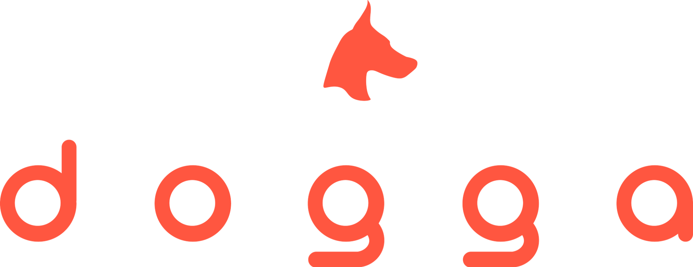
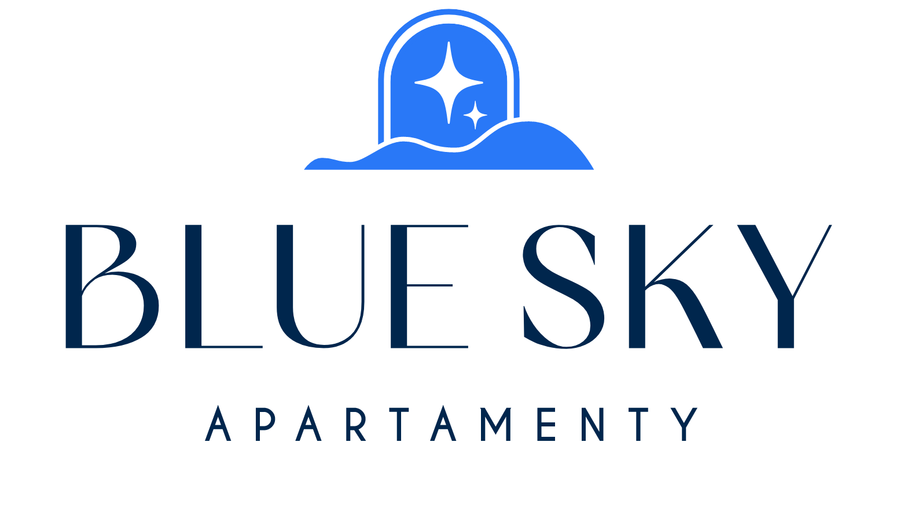
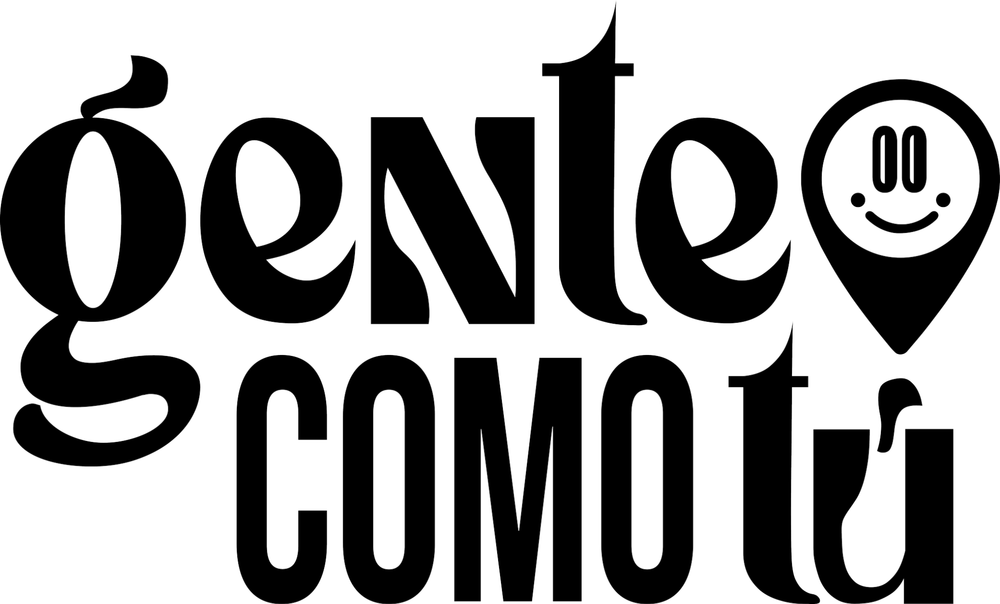
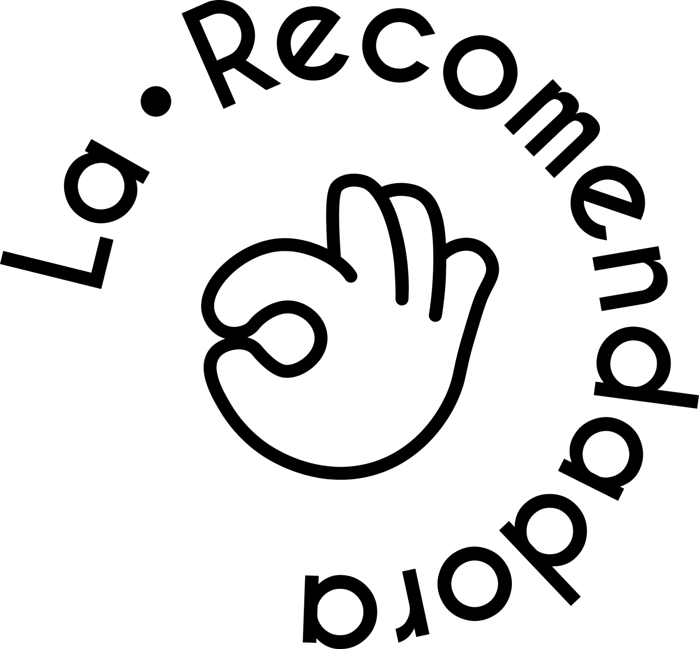

Portfolio / 01
Logotipos✳
Marcas con una idea detrás. Algunas se cuentan con un solo símbolo; otras, a través de toda su identidad.
10 / Logotipos
Cada marca tiene su propia página. Explora los proyectos de identidad.
01 / Logotipo Ver proyecto ↗
04 / Logotipo
Ver proyecto ↗
04 / Logotipo

Ver proyecto ↗ 02 / Logotipo
Ver proyecto ↗ 03 / Logotipo
Ver proyecto ↗ 05 / Logotipo
Ver proyecto ↗06 / LogotipoPróximo logotipo
07 / LogotipoPróximo logotipo
08 / LogotipoPróximo logotipo
09 / LogotipoPróximo logotipo
10 / LogotipoPróximo logotipo